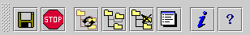

The ToolBar contains the following buttons:

Save the current configuration. If the current server is the Administration Server, save all the servers configuration including the Administration Server.

Stop the selected server. If the current server is the Administration Server, stop all servers including the Administration Server.

Reindex the selected containers. If there is no container selected, do nothing. If the resource selected is not a container, display an error dialog.

Add a resource to the selected container. If there is no container selected, do nothing. If the resource selected is not a container, display an error dialog.

Delete the selected resources. If there is no resources selected, do nothing. If you are not allowed to delete the selected resource, display an error dialog.

Edit the selected resource, display a ResourceEditor that allows you to edit the resource properties. If there is no resource selected, do nothing.

Popup a mini HTML browser that point to the "Resource Reference Documentation" of the selected resource. If there is no selected resource, do nothing.

Popup a mini HTML browser that
point to the Jigsaw
Documentation.